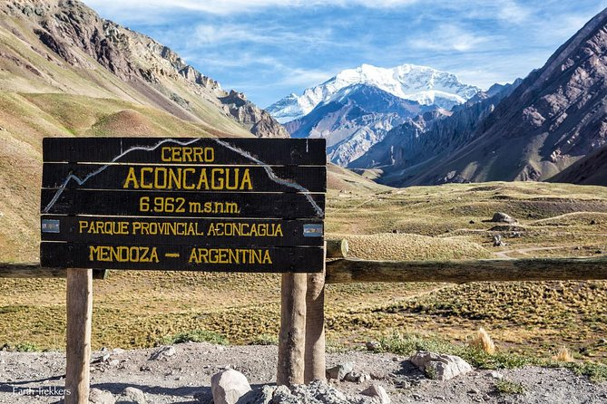

San Rafael
Explore la parte sur de la provincia de Mendoza, conocida por su exuberante paisaje verde, en este recorrido de 10 horas desde la ciudad de Mendoza. Visite los lugares más destacados, como son el Museo de Cera, San Rafael, Malargue ,la presa y pantano de Nihuil y el valle de Uco en todo su esplendor.

valor de la excursion $U 150
Alta montaña
Explore las montañas alrededor de Mendoza en esta excursión de día completo para grupos pequeños ,haga una parada en los lugares más destacados, como el monumento Cristo Redentor, el mirador panorámico de Aconcagua, el asentamiento de Uspallata,y la presa de Potrerillos .
valor de la excursion $U 120
Ciudad
Este tour recorre las 5 plazas más icónicas de Mendoza, una ciudad llena de canales que forman un oasis artificial en el desierto. Disfrute de una visita guiada por un experto local de toda la historia y cultura de la región. Conozca las principales atracciones que la ciudad tiene para ofrecer en su visita.

valor de la excursion $U 80
Tour del vino
Mendoza es la región vinícola más grande y famosa de Argentina, famosa por sus malbec, así como cabernet sauvignon y chardonnay. En esta excursión para grupos pequeños, disfrute de una cata de vinos íntima y visitará tres bodegas diferentes, incluida una bodega boutique,donde probará el mejor Malbec.

valor de la excursion $U 100